Beyond every melody lies a world — a Sekai born from emotion. Each group carries their own light, their own story to tell. Witness their worlds come alive through these captured moments.


 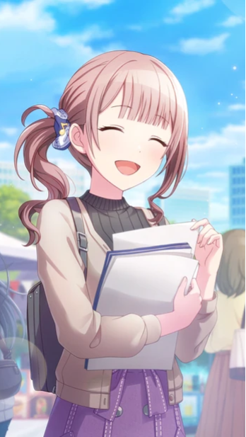
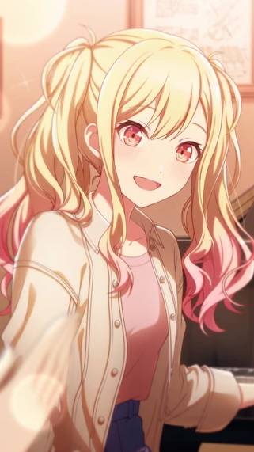
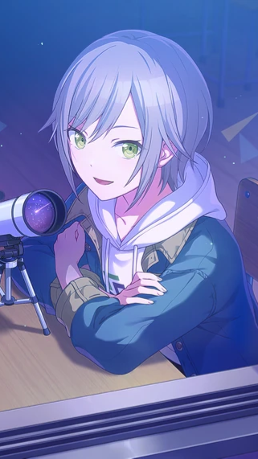
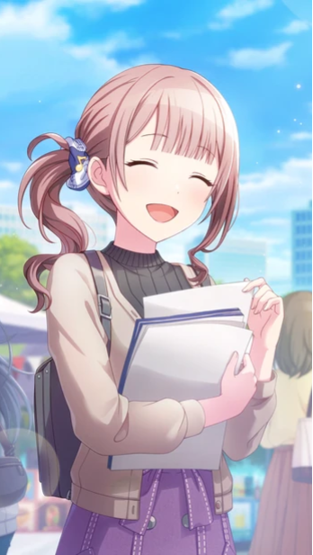
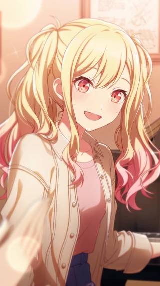
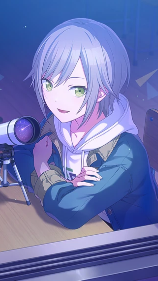
 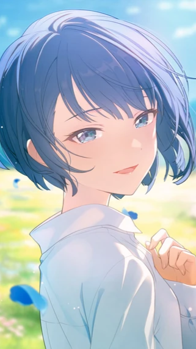
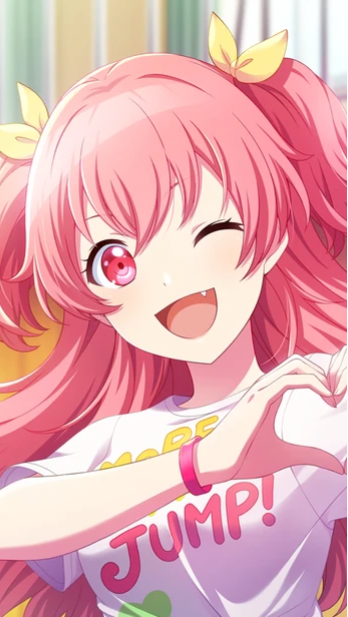
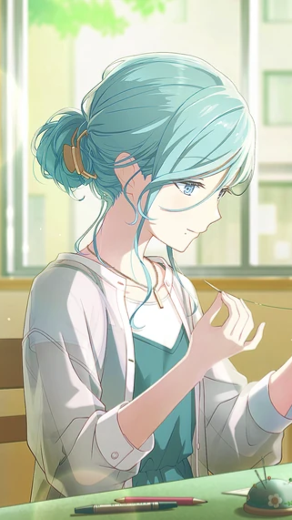
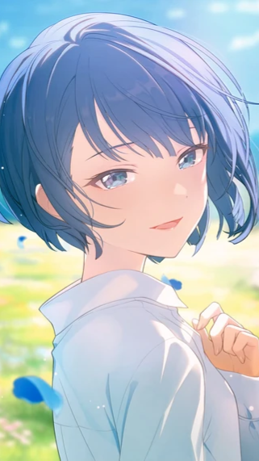
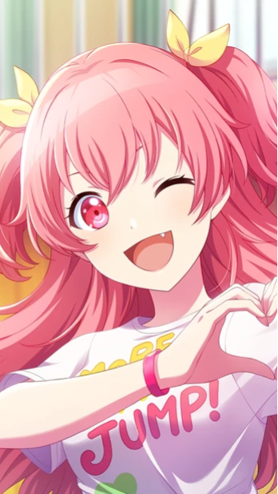
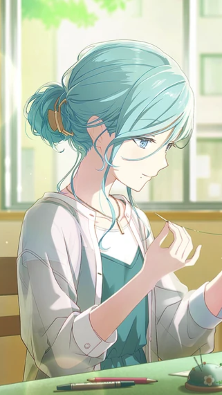
 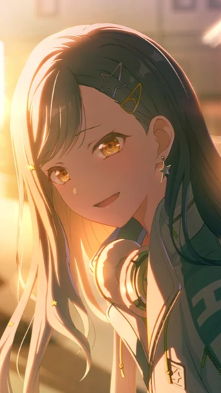
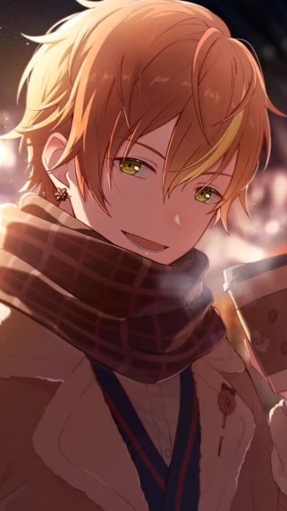
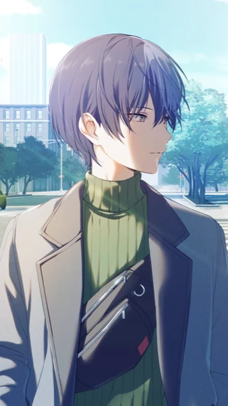
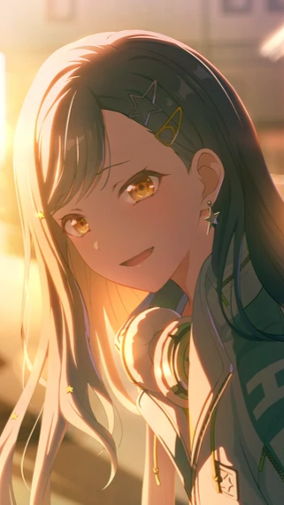
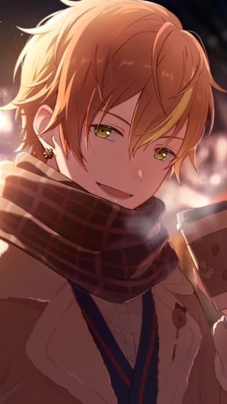
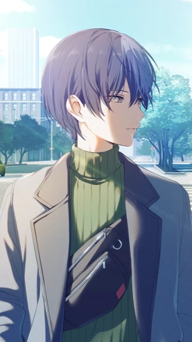
 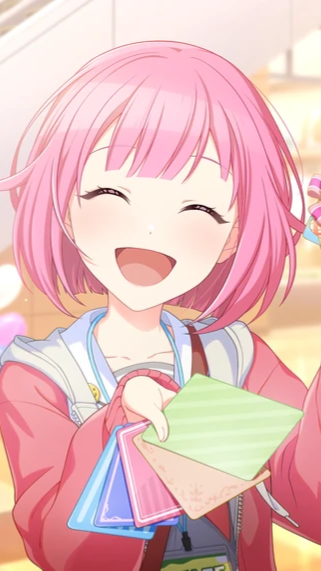
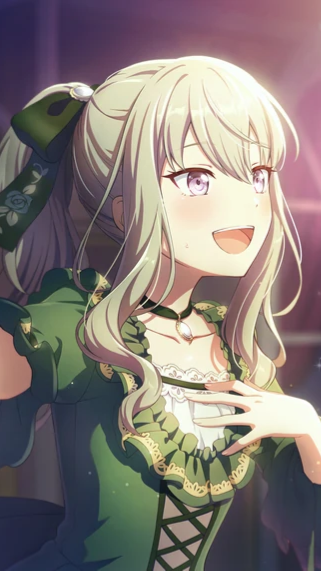
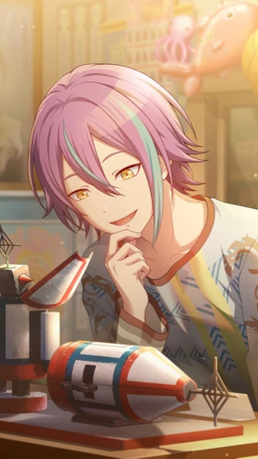
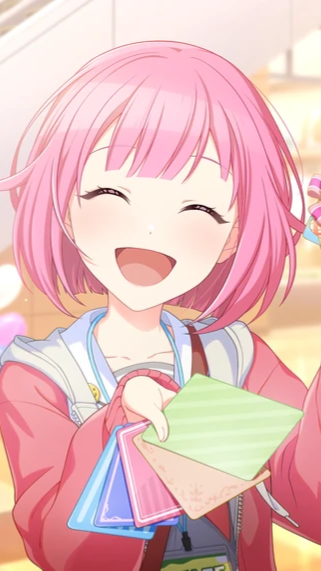
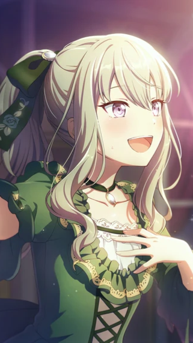
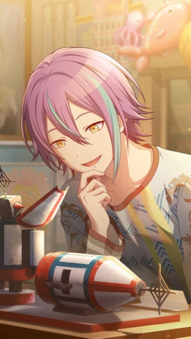
 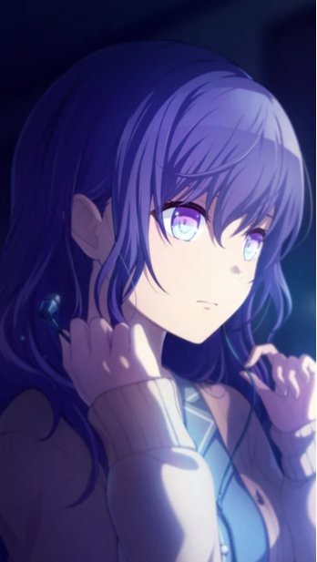
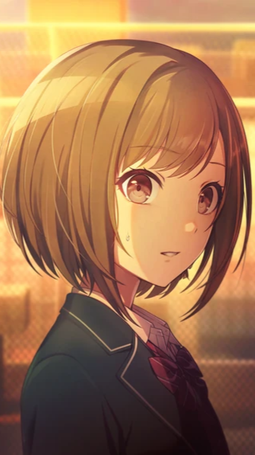
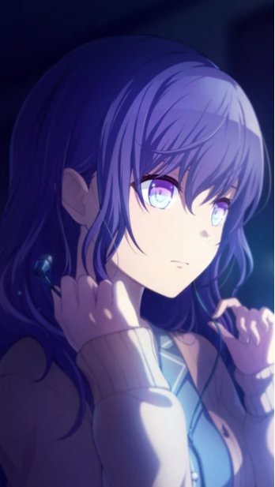
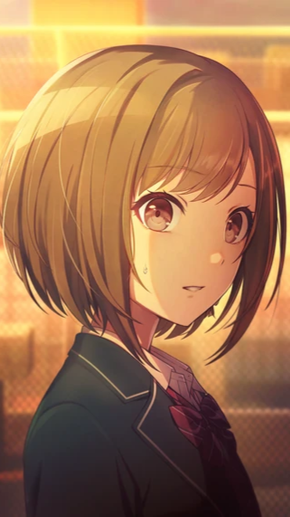